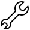

ÜBER MICH
Ich bin Lara, komme aus Brasilien, und beschäftige mich mit Kommunikation, Design und Front-end Development.
Seit ich mit 19 nach Deutschland gezogen bin und mich schnell in die Sprache und Kultur einlebte, haben mich Entschlossenheit und Anpassungsfähigkeit stets zum nächsten Ziel gebracht.
In meiner Zeit hier in München war ich unter anderem in Customer Experience, Social Media und Tourismus tätig und habe parallel Kommunikation & Design studiert.
MEINE FÄHIGKEITEN
 HARD SKILLS
- HTML5
- CSS3
- Taillwind CSS
- UX Design
- Responsiveness
- JavaScript
- Git
- Github
- Figma
- VSCode
 Sprachen
Sprachen
- Portugiesisch
- Deutsch
- Englisch
- Spanisch
 Soft Skills
Soft Skills
- Kritisches Denken
- Zielführende Kommunikation
- Empathie
- Eigenverantwortlichkeit
- Flexibles Problemlösen
MEINE ERFOLGE
Die folgenden Meilensteine bilden einen Teil dessen ab, was ich mir bisher im Studium, Online und Offline aneignen konnte.
Trotz zahlreicher Extra-Hürden, die die Visa-Bürokratie mir in den Weg legte, und die mich trotz fachlicher Qualifikation am Jobeinstieg hinderten, bin ich stets positiv und proaktiv geblieben (Messen, Networking-Events und Online-Weiterbildung).
ZIELE
Kurzfristig, natürlich, der Einstieg in die Berufswelt. Schnelles Lernen in Kombination mit meinem aktiven Beitrag zum Erfolg meines Teams, Arbeitgebers oder auch Kollegen. Mittelfristig strebe ich danach, bleibende Verbesserungen zu schaffen, für das Team eine verlässliche Anlaufstelle zu sein und mit einer steilen Lernkurve für Erfolge zu sorgen. Während wir also an den Alltagsthemen arbeiten, würde ich gerne durch Weiterbildung in UX, HTML, CSS und JavaScript, sowie anderen Sprachen neue Perspektiven für meinen Arbeitgeber bieten.
POTENZIAL
Meine bisherige Basis ist so stabil wie möglich für den Berufseinstieg vorbereitet, jedoch gibt es noch vieles, an dem ich arbeiten möchte: Speziell Programmierlogik und der Umgang mit komplexeren Codebases sind Dinge, die ich mir vor allem mit Erfahrung und Zeit aneignen möchte. Das treibt mich an, bereitet mir Vorfreude und den Fokus, um konstant zu wachsen. Derzeit nehme ich zahlreiche Online Trainings wahr, z.B. FreeCodeCamp, JavaScript libraries und Origamid Complete JavaScript + React, hauptsächlich, um noch mehr praktikable, anwendbare Fähigkeiten bieten zu können.